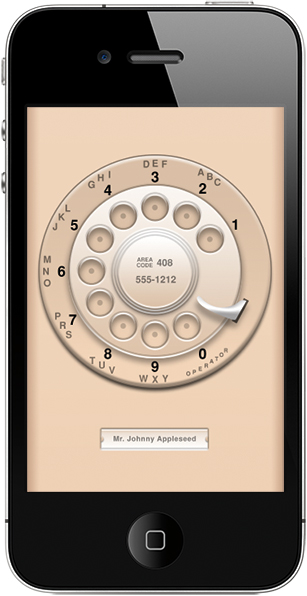
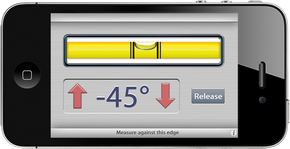

App Design Strategies
All great apps begin with a great idea, but that doesn’t mean that the path from idea to successful iOS app is an easy one. This chapter describes some strategies you can use to refine your idea, review your design options, and converge on an app that people will appreciate.
Create an App Definition Statement
An app definition statement is a concise, concrete declaration of an app’s main purpose and its intended audience.
Create an app definition statement early in your development effort to help you turn an idea and a list of features into a coherent product that people want to own. Throughout development, use the definition statement to decide if potential features and behaviors make sense. Take the following steps to create a solid app definition statement.
1. List All the Features You Think Users Might Like
Go ahead and brainstorm here. At this point, you’re trying to capture all the tasks related to your main product idea. Don’t worry if your list is long; you’ll narrow it down later.
For example, imagine that your initial idea is to develop an app that helps people shop for groceries. As you think about this activity, you come up with a list of related tasks (potential features) that users might be interested in, such as:
Creating lists
Getting recipes
Comparing prices
Locating stores
Annotating recipes
Getting and using coupons
Viewing cooking demos
Exploring different cuisines
Finding ingredient substitutions
2. Determine Who Your Users Are
Apart from the likelihood that your users are mobile and that they expect beautiful graphics, simple interactions, and high performance, what distinguishes them? In the context of the app you’re planning, what is most important to your users? Using the grocery-shopping example, you might ask whether your users:
Usually cook at home or prefer ready-made meals
Are committed coupon-users or think that coupons aren’t worth the effort
Enjoy hunting for speciality ingredients or seldom venture beyond the basics
Follow recipes strictly or use recipes as inspiration
Buy small amounts frequently or buy in bulk infrequently
Want to keep several in-progress lists for different purposes or just want to remember a few things to buy on the way home
Insist on specific brands or make do with the most convenient alternatives
Tend to buy a similar set of items on each shopping trip or buy items listed in a recipe
After musing on these questions, imagine that you decide on three characteristics that best describe your target audience: Love to experiment with recipes, are often in a hurry, and are thrifty (if it doesn’t take too much effort).
3. Filter the Feature List Through the Audience Definition
If, after deciding on a few audience characteristics, you end up with just a few features, you’re on the right track: Great iOS apps have a laser focus on the task users want to accomplish.
For example, consider the large number of possible features for the grocery-shopping app you listed in Step 1. Even though these are all useful features, it’s not likely that every feature would be equally useful to every user. More importantly, it’s not likely that every feature would be equally appreciated by the audience you defined in Step 2.
When you examine your feature list in the context of your target audience, you conclude that your app should focus on three main features: Creating lists, getting and using coupons, and getting recipes.
Now you can craft your app definition statement, concretely summarizing what the app does and for whom. A good app definition statement for this grocery-shopping app might be:
“A shopping list creation tool for thrifty people who love to cook.“
4. Don’t Stop There
Use your app definition statement throughout the development process to determine the suitability of features, controls, and terminology. For example:
As you consider whether to add a new feature, ask yourself whether it is essential to the main purpose of your app and to your target audience. If it isn’t, set it aside; it might form the basis of a different app. For example, you’ve decided that your users are interested in adventurous cooking, so emphasizing boxed cake mixes and ready-made meals would probably not be appreciated.
As you consider the look and behavior of the UI, ask yourself whether your users appreciate a simple, streamlined style or a more overtly thematic style. Be guided by what people might expect to accomplish with your app, such as the ability to accomplish a serious task, to get a quick answer, to delve into comprehensive content, or to be entertained. For example, although your grocery list app needs to be easy to understand and quick to use, your audience is likely to appreciate a themed UI that includes beautiful pictures of ingredients and meals.
As you consider the terminology to use, strive to match your audience’s expertise with the subject. For example, even though your audience might not be made up of expert chefs, you’re fairly confident that they appreciate seeing the proper terms for ingredients and techniques.
Design the App for the Device
You know what your app does and who its audience is; now you need to make sure that your app looks and feels like it was designed expressly for an iOS device. This is crucial because people have high expectations for the apps they choose to install on their devices. If your app feels like it was designed for a different device, or for the web, people are less likely to value it.
Embrace iOS UI Paradigms
iOS users are accustomed to the appearance and behavior of the built-in apps, so they tend to expect similar experiences in the apps they download. You don’t want to mimic every detail of the built-in apps but it’s helpful to understand the design patterns they follow. Start by understanding the characteristics that distinguish iOS devices and the apps that run on them (you can read about these in “Platform Characteristics”). Then, keep the following things in mind:
Controls should look tappable. iOS controls, such as buttons, pickers, and sliders, have contours and gradients that invite touches.
App structure should be clean and easy to navigate. iOS provides the navigation bar for drilling down through hierarchical content, and the tab bar for displaying different peer groups of content or functionality.
User feedback should be subtle, but clear. iOS apps often use precise, fluid animations to show the results of user actions. iOS apps can also use the activity indicator and the progress view to show status, and the alert to give users warnings or other critical information.
You can learn about the usage guidelines that govern these elements in “iOS UI Element Usage Guidelines.” As you begin designing the overall user experience of your app, be sure you understand the guidelines described in “User Experience Guidelines.”
Ensure that Universal Apps Run Well on Both iPhone and iPad
If you’re planning to develop an app that runs on iPhone and iPad, you need to adapt your design to each device. Here is some guidance to help you do this:
Mold the UI of each app version to the device it runs on. Most individual UI elements are available on both devices, but overall the layout differs dramatically.
Adapt art to the screen size. Users tend to expect more high-fidelity artwork in iPad apps than they do in iPhone apps. Merely scaling up an iPhone app to fill the iPad screen is not recommended.
Preserve the primary functionality of your app, regardless of the device it runs on. Even though one version might offer a more in-depth or interactive presentation of the task than the other, it’s important to avoid making users feel that they’re choosing between two entirely different apps.
Go beyond the default. Unmodified iPhone apps run in a compatibility mode on iPad by default. Although this mode allows people to use an iPhone app on iPad, it does not give them the device-specific experience they want.
Reconsider Web-Based Designs
If you're coming from the web, you need to make sure that you give people an iOS app experience, not a web experience. Remember, people can visit your website on their iOS devices using Safari on iOS.
Here are some strategies that can help web developers create an iOS app:
Focus your app. Websites often greet visitors with a large number of tasks and options from which they can choose, but this type of experience does not translate well to iOS apps. iOS users expect an app to do what it advertises, and they want to see useful content immediately.
Make sure your app lets people do something. People might enjoy viewing marketing content in the websites they visit, but they expect to accomplish something in an app.
Design for touch. Don’t try to replicate web UI design paradigms in your iOS app. Instead, get familiar with the UI elements and patterns of iOS and use them to showcase your content. Web elements you’ll need to re-examine include menus, interactions initiated by hovering, and links.
Let people scroll. Most websites take care to display the most important information in the top half of the page where it is seen first (“above the fold”), because people sometimes leave a page when they don’t find what they’re looking for near the top. But on iOS devices, scrolling is an easy, expected part of the experience. If you reduce font size or squeeze controls to fit your content into the space of a single device screen, you’re likely to end up with unreadable content and an unusable layout.
Relocate the homepage icon. Websites often display an icon that links to the homepage at the top of every webpage. iOS apps don’t include homepages, so this behavior is unnecessary. In addition, iOS apps allow people to tap the status bar to quickly scroll back to the top of a long list. If you center a tappable home icon at the top of the screen, it’s very difficult for users to tap the status bar instead.
Tailor Customization to the Task
The best iOS apps balance UI customization with clarity of purpose and ease of use. To achieve this balance in your app, be sure to consider customization early in the design process. Because concerns about branding, originality, and marketability often influence customization decisions, it can be challenging to stay focused on how customization impacts the user experience.
Using the iOS SDK, you can customize the UI of your app as much or as little as you choose. Because there are no practical limits to the amount of customization that you can do, you need to determine how customization might affect the task your app enables. As you consider the tasks in your app, think about how often users perform them and under what circumstances.
For example, imagine an app that enables phone calls. Now imagine that instead of a keypad, the app displays a beautiful, realistic rotary dial. The dial is meticulously rendered, so users both appreciate its quality and instantly know how to use it. The dial behaves realistically, so users delight in making the dialing gesture and hearing the distinctive sounds. But for users who often need to call numbers that are not in Contacts, initial appreciation of the experience soon gives way to frustration, because using a rotary dial is much less efficient than using a keypad. In an app that is designed to help people make phone calls, this beautiful custom UI is a hindrance.

On the other hand, consider the BubbleLevel sample app, which displays a realistic rendition of a carpenter’s level. People know how to use the physical tool so they instantly know how to use the app. The app could have displayed its information without the rendition of the bubble vial, but this would have made the app less intuitive and harder to use. In this case, the custom UI not only shows people how to use the app, it also makes the task easier to accomplish.

As you consider how customization might enhance or detract from the task your app enables, keep these guidelines in mind.
Always have a reason for customization. Ideally, UI customization facilitates the task people want to perform and enhances their experience. As much as possible, you need to let your app’s task drive your customization decisions. For example:
If your app enables a productive task that involves the manipulation of a lot of detailed data, people are likely to appreciate an understated, mostly standard UI and streamlined navigation.
If your app helps people view content, they generally don’t appreciate a UI that competes with it.
If your app is a game or provides an immersive, story-driven experience, people expect to enter a unique world filled with rich, beautiful graphics and innovative interactions.
As much as possible, avoid increasing the user’s cognitive burden. Users are familiar with the appearance and behavior of the standard UI elements, so they don’t have to stop and think about how to use them. When faced with elements that do not look or behave at all like standard ones, users lose the advantage of their prior experience. Unless your unique elements make performing the task easier, users might dislike being forced to learn new procedures that don’t transfer to any other apps.
Be internally consistent. The more custom your UI is, the more important it is for the appearance and behavior of your custom elements to be consistent within your app. If users take the time to learn how to use the unfamiliar controls you create, they expect to be able to rely on that knowledge throughout your app.
Always defer to the content. Because the standard elements are so familiar, they don’t compete with the content for people’s attention. As you customize your UI, take care to ensure that it does not overshadow the content people care about. For example, if your app allows people to watch videos, you might choose to design custom playback controls. But whether you use custom or standard playback controls is less important than whether the controls fade out after the user begins watching the video and reappear with a tap.
Think twice before you redesign a standard control. If you plan on doing more than customizing a standard control, make sure your redesigned control provides as much information as the standard one. For example, if you create a button that doesn’t have the rounded, dimensional appearance people associate with buttons, people might not realize that it’s tappable. Or, if you create a switch control that does not indicate the presence of the opposite value, people might not realize that it’s a two-state control.
Be sure to thoroughly user-test custom UI elements. During testing, closely observe users to see if they can predict what your elements do and if they can interact with them easily. If, for example, you create a control that has a hit target smaller than 44 x 44 points, people will have trouble activating it. Or, if you create a view that responds differently to a tap than it does to a swipe, be sure the functionality the view provides is worth the extra care people have to take when interacting with it.
Prototype and Iterate
Before you invest significant engineering resources into the implementation of your design, it’s a really good idea to create prototypes for user testing. Even if you can get only a few colleagues to test the prototypes, you’ll benefit from their fresh perspectives on your app’s functionality and user experience.
In the very early stages of your design you can use paper prototypes or wireframes to lay out the main views and controls, and to map the flow among screens. Although you can get some useful feedback from testing wireframes, their sparseness can mislead testers. This is because it’s difficult for people to imagine how the experience of an app will change when wireframes are filled in with real content.
You’ll get more valuable feedback if you can put together a fleshed-out prototype that runs on a device. When people can interact with your prototype on a device, they’re more likely to uncover places where your app doesn’t function as they expect, or where the user experience is too complex.
The easiest way to create a credible prototype is to use a storyboard-based Xcode template to build a basic app, and populate it with some appropriate placeholder content. (A storyboard file captures the entire UI of your app, including the transitions among different screens.) Then, install the prototype on a device so that your testers can have as realistic an experience as possible.
You don’t need to supply a large amount of content or enable every control in your prototype app, but you do need to provide enough context to suggest a realistic experience. Aim for a balance between the typical user experience and the more unusual edge cases. For example, if it’s likely that your app will handle long lists of items, you should avoid creating a prototype that displays only one or two list items. And for testing user interactions, as long as testers can tap an area of the screen to advance to the next logical view or to perform the main task, they’ll be able to provide constructive feedback.
When you base your prototype on an Xcode app template, you get lots of functionality for free and it’s relatively easy to make design adjustments in response to feedback. With a short turnaround time, you should be able to test several iterations of your prototype before you solidify your design and commit resources to its implementation. To get started learning about Xcode, see Xcode User Guide.
Copyright © 2013 Apple Inc. All Rights Reserved. Terms of Use | Privacy Policy | Updated: 2013-05-01